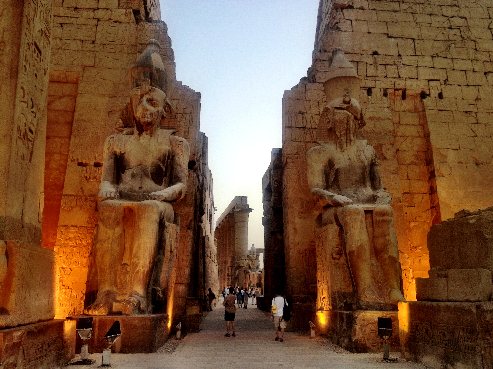

EGYPT
THE EGYPT MUSEUM
Egypt (Arabic: مِصر, romanized: Miṣr, Egyptian Arabic pronunciation: [masˤr]), officially the Arab Republic of Egypt, is a transcontinental country spanning the northeast corner of Africa and southwest corner of Asia via a land bridge formed by the Sinai Peninsula. It is bordered by the Mediterranean Sea to the north, the Gaza Strip of Palestine and Israel to the northeast, the Red Sea to the east, Sudan to the south, and Libya to the west. The Gulf of Aqaba in the northeast separates Egypt from Jordan and Saudi Arabia. Cairo is the capital and largest city of Egypt, while Alexandria, the second-largest city, is an important industrial and tourist hub at the Mediterranean coast.[14] At approximately 100 million inhabitants, Egypt is the 14th-most populated country in the world.

ABU SIMBLE TEMPLES
Abu Simbel is a historic site comprising two massive rock-cut temples in the village of Abu Simbel (Arabic: أبو سمبل), Aswan Governorate, Upper Egypt, near the border with Sudan. It is situated on the western bank of Lake Nasser, about 230 km (140 mi) southwest of Aswan (about 300 km (190 mi) by road). The complex is part of the UNESCO World Heritage Site known as the "Nubian Monuments",[1] which run from Abu Simbel downriver to Philae (near Aswan), and include Amada, Wadi es-Sebua, and other Nubian sites. The twin temples were originally carved out of the mountainside in the 13th century BC, during the 19th Dynasty reign of the Pharaoh Ramesses II. They serve as a lasting monument to the king Ramesses II.

KARNAK
The Karnak Temple Complex, commonly known as Karnak (/ˈkɑːr.næk/,[1] which was originally derived from Arabic: خورنق Khurnaq "fortified village"[2]), comprises a vast mix of decayed temples, pylons, chapels, and other buildings near Luxor, Egypt. Construction at the complex began during the reign of Senusret I (reigned 1971–1926 BCE) in the Middle Kingdom (around 2000–1700 BCE) and continued into the Ptolemaic Kingdom (305–30 BCE), although most of the extant buildings date from the New Kingdom. The area around Karnak was the ancient Egyptian Ipet-isut ("The Most Selected of Places") and the main place of worship of the 18th Dynastic Theban Triad, with the god Amun as its head. It is part of the monumental city of Thebes, and in 1979 it was inscribed on the UNESCO World Heritage List along with the rest of the city.[3] The Karnak complex gives its name to the nearby, and partly surrounded, modern village of El-Karnak, 2.5 kilometres (1.6 miles) north of Luxor.
GREAT PHENIX OF GIZA
The Great Pyramid of Giza[a] is the largest Egyptian pyramid and the tomb of Fourth Dynasty pharaoh Khufu. Built in the early 26th century BC during a period of around 27 years,[3] the pyramid is the oldest of the Seven Wonders of the Ancient World, and the only one to remain largely intact. As part of the Giza pyramid complex, it borders present-day Giza in Greater Cairo, Egypt.
Initially standing at 146.6 metres (481 feet), the Great Pyramid was the tallest man-made structure in the world for more than 3,800 years. Over time, most of the smooth white limestone casing was removed, which lowered the pyramid's height to the present 138.5 metres (454.4 ft). What is seen today is the underlying core structure. The base was measured to be about 230.3 metres (755.6 ft) square, giving a volume of roughly 2.6 million cubic metres (92 million cubic feet), which includes an internal hillock.
LUXOR TEMPLE
The Luxor Temple (Arabic: معبد الأقصر) is a large Ancient Egyptian temple complex located on the east bank of the Nile River in the city today known as Luxor (ancient Thebes) and was constructed approximately 1400 BCE. In the Egyptian language it was known as ipet resyt, "the southern sanctuary". It was one of the two primary temples on the east bank, the other being Karnak.[1] Unlike the other temples in Thebes, Luxor temple is not dedicated to a cult god or a deified version of the pharaoh in death. Instead, Luxor temple is dedicated to the rejuvenation of kingship; it may have been where many of the pharaohs of Egypt were crowned in reality or conceptually (as in the case of Alexander the Great, who claimed he was crowned at Luxor but may never have traveled south of Memphis, near modern Cairo).
